Kategori Wisata NTB
Pantai
Keindahan alami NTB terpancar dari garis pantainya yang indah dan pasir putih yang lembut. Dari Pantai Pink yang eksotis hingga Pantai Senggigi yang legendaris, banyak artis yang memilih tempat ini sebagai tujuan wisata, loh!
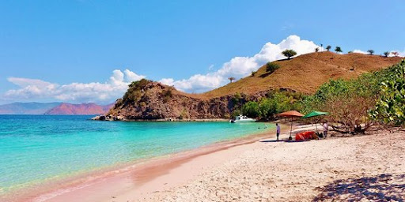
Pantai Pink
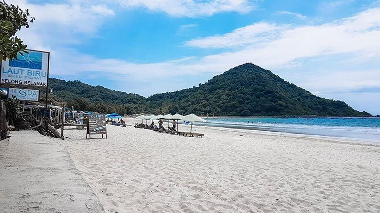
Pantai Selong Belanak
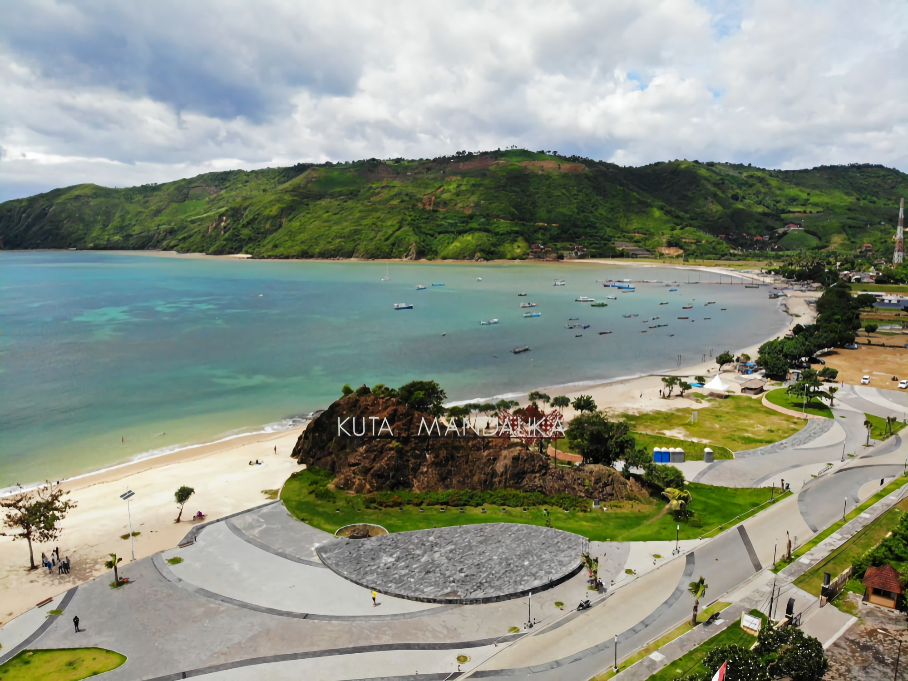
Pantai Kuta Mandalika
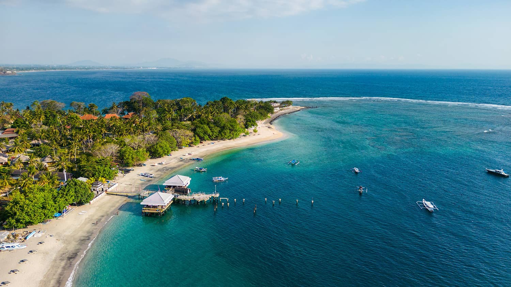
Pantai Senggigi
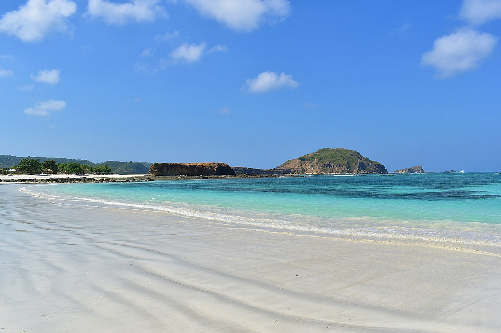
Pantai Tanjung Aan
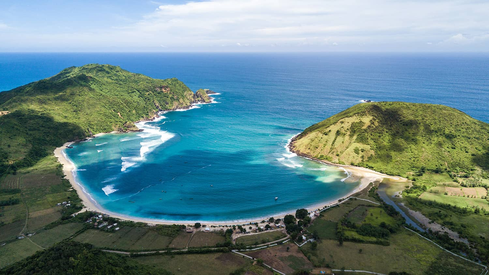
Pantai Mawun
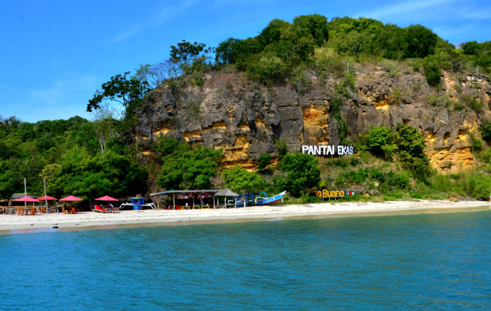
Pantai Ekas
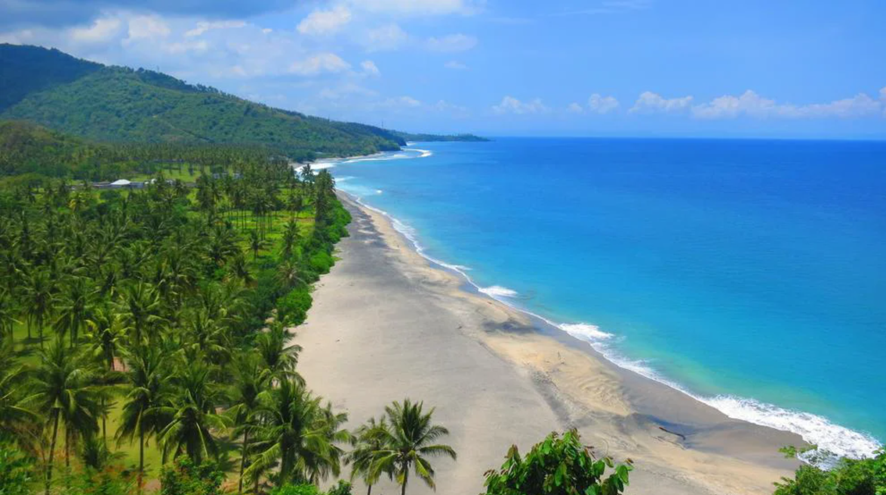
Pantai Nipah
Gunung & Danau
Buat kamu yang suka tantangan dan petualangan, mendaki Gunung Rinjani cocok banget buat kamu! Gunung rinjani adalah gunung favorit para pendaki~ Atau bisa juga jelajahi keindahan Danau Segara Anak yang memukau.
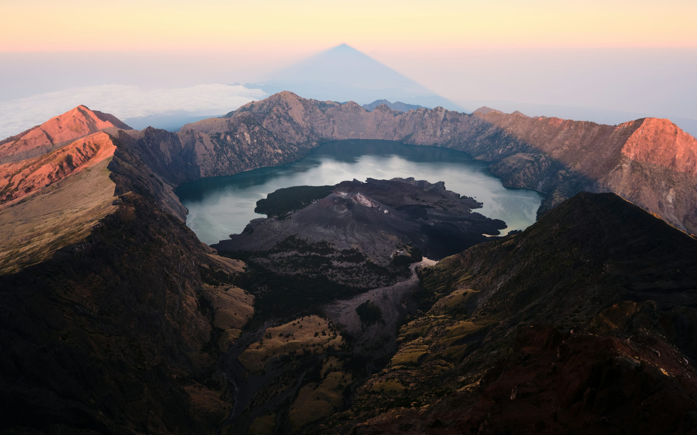
Gunung Rinjani
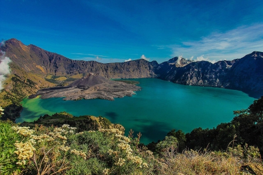
Danau Segara Anak

Bukit Merese

Savana Proopok

Bukit Pergasingan
Air Terjun
Keindahan alami NTB juga terpancar dari deretan air terjun yang memukau. Dari Benang Kelambu yang cukup hijau hingga Sendang Gile yang menakjubkan, NTB punya surga tersembunyi berupa air terjun yang masih alami.

Sendang Gile

Benang Kelambu

Benang Stokel

Tiu Kelep

Mata Jitu
Desa Wisata
Kamu juga bisa eksplor kehidupan asli masyarakat NTB melalui desa-desa wisata yang masih menjaga adat istiadat dan tradisi mereeka~ Hal ini bakal ngasih kamu pengalaman autentik yang ga bakal bisa kamu temukan di mana pun.

Desa Sade

Desa Sukarara

Desa Ende
Gili
NTB memiliki Kepulauan cantik di sekitar Lombok yang bebas kendaraan bermotor, cocok buat kamu yang suka pergi pergi naik motor sambil kena angin sepoi-sepoi~ Gili Trawangan, Gili Air, dan Gili Meno menawarkan pengalaman tropis yang tak terlupakan dengan pasir putih dan air laut yang cukup jernih.
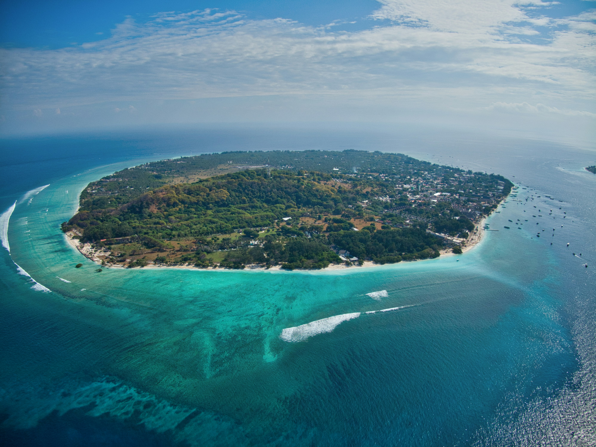
Gili Trawangan

Gili Air
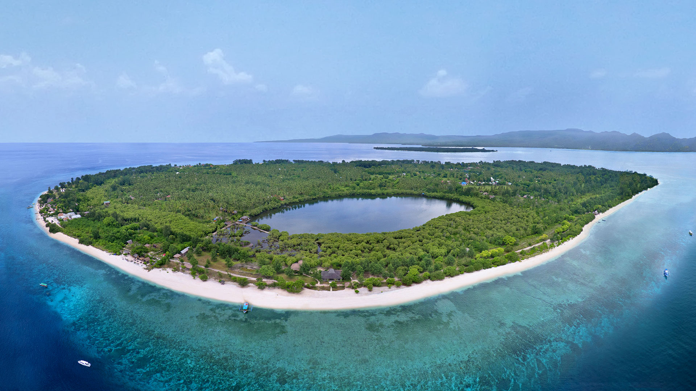
Gili Meno
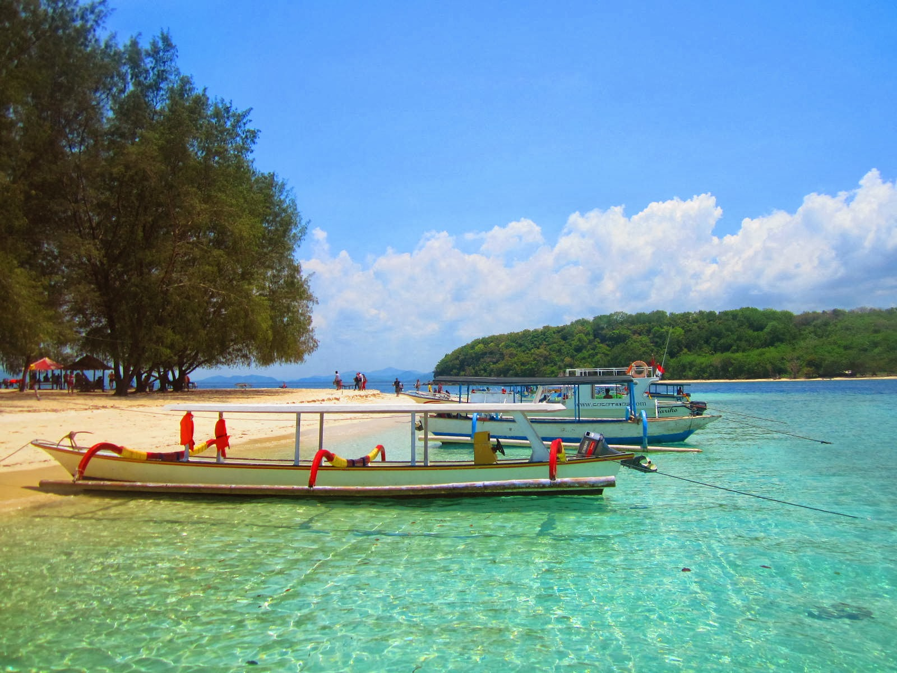
Gili Nanggu
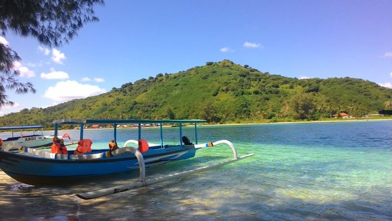
Gili Sudak

Gili Kedis

Gili Pulau Moyo
Masjid & Religi
Tempat-tempat bersejarah dan religius inilah yang menjadi saksi sejarah keislaman di NTB! Bangunan-bangunan ini punya arsitektur unik dan makna spiritual yang dalam.

Masjid Bayan Beleq